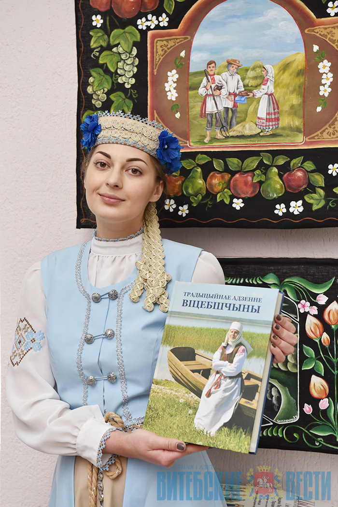
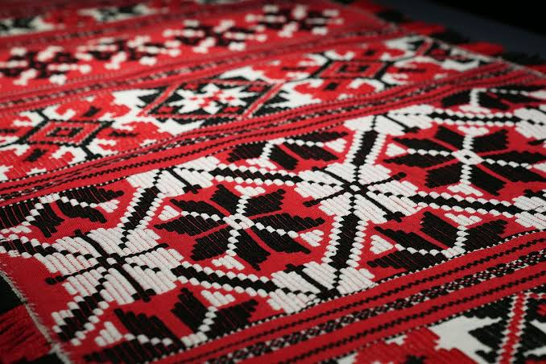

01
Январь - Февраль
Каляды
Колядные песни, хождение со звездой и знаменитая игра «Женитьба Терешки» на Лепельщине.
ИсследоватьОт зимних колядных игрищ на Лепельщине до купальских костров над Западной Двиной. Исследуйте праздники, песни и символы Витебской области.

Колядные песни, хождение со звездой и знаменитая игра «Женитьба Терешки» на Лепельщине.
ИсследоватьЗаклички с высоких холмов, украшение деревьев лентами и выпечка обрядовых жаворонков.
ИсследоватьНочь огня и воды на берегах Двины и Браславских озёр, венки на воде и поиск папараць-кветкі.
ИсследоватьЧествование последнего снопа, благодарность земле за урожай и тихие семейные вечера памяти.
ИсследоватьЖивой взгляд на народный календарь Витебщины
Уникальный обряд, включённый в список нематериального культурного наследия Беларуси: музыка, танцы и народный юмор.
Какие травы собирали на рассвете в Витебском крае и почему венки со свечами доверяли течению Западной Двины.
Как жители северной Беларуси провожали долгую зиму и зазывали первых перелётных птиц веснянками.

Красный геометрический орнамент на небелёном льне сопровождал каждый праздник Витебщины. Ромб с точками означал засеянное поле, а волнистая линия - воды Западной Двины.
Расшифровка узора: Восьмиконечная звезда («ружа») в центре композиции - древний оберег солнца и семейного благополучия на праздниках «Багач» и «Дажынкі».